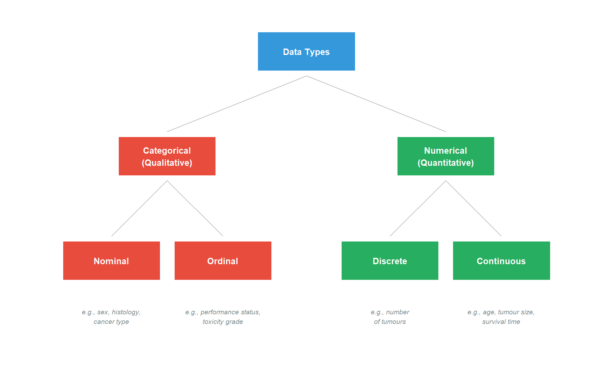

Understanding data types is essential before any analysis.
5.2 The Two Main Categories
Data are either numerical (quantitative) or categorical (qualitative).
Show R code
library(ggplot2)# Create a hierarchical diagram of data typesboxes <-tibble(label =c("Data Types", "Categorical\n(Qualitative)", "Numerical\n(Quantitative)","Nominal", "Ordinal", "Discrete", "Continuous"),x =c(5, 2.5, 7.5, 1.5, 3.5, 6.5, 8.5),y =c(4, 2.5, 2.5, 1, 1, 1, 1),fill =c("#3498db", "#e74c3c", "#27ae60", "#e74c3c", "#e74c3c", "#27ae60", "#27ae60"))examples <-tibble(label =c("e.g., sex, histology,\ncancer type", "e.g., performance status,\ntoxicity grade","e.g., number\nof tumours","e.g., age, tumour size,\nsurvival time"),x =c(1.5, 3.5, 6.5, 8.5),y =c(0.2, 0.2, 0.2, 0.2))ggplot() +# Boxesgeom_tile(data = boxes, aes(x = x, y = y, fill = fill), width =1.8, height =0.6, colour ="white", linewidth =2) +geom_text(data = boxes, aes(x = x, y = y, label = label), size =3.5, colour ="white", fontface ="bold") +# Examplesgeom_text(data = examples, aes(x = x, y = y, label = label),size =2.8, colour ="#7f8c8d", fontface ="italic") +# Connecting linesannotate("segment", x =5, xend =2.5, y =3.65, yend =2.85, colour ="#bdc3c7") +annotate("segment", x =5, xend =7.5, y =3.65, yend =2.85, colour ="#bdc3c7") +annotate("segment", x =2.5, xend =1.5, y =2.15, yend =1.35, colour ="#bdc3c7") +annotate("segment", x =2.5, xend =3.5, y =2.15, yend =1.35, colour ="#bdc3c7") +annotate("segment", x =7.5, xend =6.5, y =2.15, yend =1.35, colour ="#bdc3c7") +annotate("segment", x =7.5, xend =8.5, y =2.15, yend =1.35, colour ="#bdc3c7") +scale_fill_identity() +theme_void() +coord_cartesian(xlim =c(0, 10), ylim =c(-0.3, 4.5))

Figure 5.1: Classification of data types
5.3 Categorical Data
Categorical data tells us which category or group an individual belongs to.
5.3.1 Nominal Scale
Categories are distinguished by name only, with no intrinsic ordering.
Variable
Categories
Clinical Use
Sex
Male, Female
Patient demographics
Histology
Adenocarcinoma, Squamous, etc.
Cancer classification
Cancer type
Breast, Lung, Colorectal, etc.
Treatment planning
Blood group
A, B, AB, O
Transfusion matching
5.3.2 Ordinal Scale
Categories have a natural order or ranking.
Variable
Categories (ordered)
Clinical Use
Performance status
0, 1, 2, 3, 4
Fitness assessment
Toxicity grade
1, 2, 3, 4, 5
Side effect severity
Tumour stage
I, II, III, IV
Prognosis
Pain score
Mild, Moderate, Severe
Symptom management
Key Point
With ordinal data, we know the order but not the size of differences between categories. The difference between stage I and II may not be the same as between stage III and IV.
5.4 Numerical Data
Numerical data consists of counts or measurements.
5.4.1 Discrete Data
Values come from a counting process and can only take certain values (usually whole numbers).
Examples:
Number of metastases (0, 1, 2, 3, …)
Number of chemotherapy cycles
Number of hospital admissions
Number of lymph nodes involved
5.4.2 Continuous Data
Values come from a measuring process and can take any value within a range.
Examples:
Age (years)
Tumour size (cm)
Haemoglobin level (g/dL)
Survival time (months)
Weight (kg)
FEV1 (litres)
Practical Tip
Age is technically continuous but often treated as discrete (whole years). Similarly, some continuous variables are recorded in discrete categories (e.g., age groups).
5.5 Special Types
5.5.1 Dichotomous (Binary) Variables
A categorical variable with exactly two categories.
Variable
Categories
Coding
Vital status
Alive, Dead
0, 1
Response
Responder, Non-responder
0, 1
Mutation
Present, Absent
0, 1
Binary variables are often coded as 0 and 1 for statistical analysis.
5.5.2 Paired Data
When measurements come in related pairs from the same individuals.
Example: Tumour size measured before and after treatment in the same patients.
Table 5.1: Example of paired data: tumour measurements before and after radiotherapy
Patient
Before Treatment (cm)
After Treatment (cm)
1
4.2
2.1
2
3.8
2.5
3
5.1
3.2
4
2.9
1.8
5
4.5
2.8
Paired data requires special statistical methods that account for the connection between measurements.
5.6 Identifying Data Types: Practice
Quick Reference
Ask yourself:
Is it a category or a number?
Category → Categorical
Number → Numerical
If categorical, is there a natural order?
No order → Nominal
Natural order → Ordinal
If numerical, does it come from counting or measuring?
Counting (whole numbers only) → Discrete
Measuring (any value possible) → Continuous
5.6.1 Test Yourself
Variable
Your Answer
Number of brain metastases
?
ECOG performance status
?
Overall survival (months)
?
Tumour location (lobe)
?
PSA level (ng/mL)
?
Click to reveal answers
Variable
Answer
Reason
Number of brain metastases
Discrete numerical
Counting whole numbers
ECOG performance status
Ordinal categorical
Ordered categories (0-4)
Overall survival (months)
Continuous numerical
Time measurement
Tumour location (lobe)
Nominal categorical
Categories without order
PSA level (ng/mL)
Continuous numerical
Measurement
5.7 Summary
Categorical data describes group membership
Nominal: no natural order (sex, cancer type)
Ordinal: natural order (stage, grade)
Numerical data consists of numbers
Discrete: from counting (number of tumours)
Continuous: from measuring (tumour size, survival time)
Dichotomous variables have exactly two categories
Paired data links measurements from the same individuals
Correctly identifying data types determines appropriate analysis methods
Source Code
---title: "Types of Data"---# Types of Data {#sec-types-of-data}```{r}#| label: setup#| include: falseif (!require("pak")) install.packages("pak")pak::pak(c("tidyverse", "ggplot2", "knitr"), ask =FALSE)library(tidyverse)library(ggplot2)library(knitr)```## Why Data Types MatterDifferent types of data require different:- Summary measures- Graphical displays- Statistical testsUnderstanding data types is essential before any analysis.## The Two Main CategoriesData are either **numerical** (quantitative) or **categorical** (qualitative).```{r}#| label: fig-data-types#| fig-cap: "Classification of data types"#| fig-width: 10#| fig-height: 6library(ggplot2)# Create a hierarchical diagram of data typesboxes <-tibble(label =c("Data Types", "Categorical\n(Qualitative)", "Numerical\n(Quantitative)","Nominal", "Ordinal", "Discrete", "Continuous"),x =c(5, 2.5, 7.5, 1.5, 3.5, 6.5, 8.5),y =c(4, 2.5, 2.5, 1, 1, 1, 1),fill =c("#3498db", "#e74c3c", "#27ae60", "#e74c3c", "#e74c3c", "#27ae60", "#27ae60"))examples <-tibble(label =c("e.g., sex, histology,\ncancer type", "e.g., performance status,\ntoxicity grade","e.g., number\nof tumours","e.g., age, tumour size,\nsurvival time"),x =c(1.5, 3.5, 6.5, 8.5),y =c(0.2, 0.2, 0.2, 0.2))ggplot() +# Boxesgeom_tile(data = boxes, aes(x = x, y = y, fill = fill), width =1.8, height =0.6, colour ="white", linewidth =2) +geom_text(data = boxes, aes(x = x, y = y, label = label), size =3.5, colour ="white", fontface ="bold") +# Examplesgeom_text(data = examples, aes(x = x, y = y, label = label),size =2.8, colour ="#7f8c8d", fontface ="italic") +# Connecting linesannotate("segment", x =5, xend =2.5, y =3.65, yend =2.85, colour ="#bdc3c7") +annotate("segment", x =5, xend =7.5, y =3.65, yend =2.85, colour ="#bdc3c7") +annotate("segment", x =2.5, xend =1.5, y =2.15, yend =1.35, colour ="#bdc3c7") +annotate("segment", x =2.5, xend =3.5, y =2.15, yend =1.35, colour ="#bdc3c7") +annotate("segment", x =7.5, xend =6.5, y =2.15, yend =1.35, colour ="#bdc3c7") +annotate("segment", x =7.5, xend =8.5, y =2.15, yend =1.35, colour ="#bdc3c7") +scale_fill_identity() +theme_void() +coord_cartesian(xlim =c(0, 10), ylim =c(-0.3, 4.5))```## Categorical DataCategorical data tells us which **category** or **group** an individual belongs to.### Nominal ScaleCategories are distinguished by **name only**, with **no intrinsic ordering**.| Variable | Categories | Clinical Use ||----------|------------|--------------|| Sex | Male, Female | Patient demographics || Histology | Adenocarcinoma, Squamous, etc. | Cancer classification || Cancer type | Breast, Lung, Colorectal, etc. | Treatment planning || Blood group | A, B, AB, O | Transfusion matching |### Ordinal ScaleCategories have a **natural order** or **ranking**.| Variable | Categories (ordered) | Clinical Use ||----------|---------------------|--------------|| Performance status | 0, 1, 2, 3, 4 | Fitness assessment || Toxicity grade | 1, 2, 3, 4, 5 | Side effect severity || Tumour stage | I, II, III, IV | Prognosis || Pain score | Mild, Moderate, Severe | Symptom management |::: {.callout-note}## Key PointWith ordinal data, we know the **order** but not the **size** of differences between categories. The difference between stage I and II may not be the same as between stage III and IV.:::## Numerical DataNumerical data consists of **counts** or **measurements**.### Discrete DataValues come from a **counting** process and can only take certain values (usually whole numbers).**Examples:**- Number of metastases (0, 1, 2, 3, ...)- Number of chemotherapy cycles- Number of hospital admissions- Number of lymph nodes involved### Continuous DataValues come from a **measuring** process and can take any value within a range.**Examples:**- Age (years)- Tumour size (cm)- Haemoglobin level (g/dL)- Survival time (months)- Weight (kg)- FEV1 (litres)::: {.callout-tip}## Practical TipAge is technically continuous but often treated as discrete (whole years). Similarly, some continuous variables are recorded in discrete categories (e.g., age groups).:::## Special Types### Dichotomous (Binary) VariablesA categorical variable with **exactly two categories**.| Variable | Categories | Coding ||----------|------------|--------|| Vital status | Alive, Dead | 0, 1 || Response | Responder, Non-responder | 0, 1 || Mutation | Present, Absent | 0, 1 |Binary variables are often coded as 0 and 1 for statistical analysis.### Paired DataWhen measurements come in **related pairs** from the same individuals.**Example:** Tumour size measured before and after treatment in the same patients.```{r}#| label: tbl-paired-example#| tbl-cap: "Example of paired data: tumour measurements before and after radiotherapy"paired_example <-tibble(Patient =1:5,`Before Treatment (cm)`=c(4.2, 3.8, 5.1, 2.9, 4.5),`After Treatment (cm)`=c(2.1, 2.5, 3.2, 1.8, 2.8))kable(paired_example, align ="c")```Paired data requires special statistical methods that account for the connection between measurements.## Identifying Data Types: Practice::: {.callout-tip}## Quick ReferenceAsk yourself:1. **Is it a category or a number?** - Category → Categorical - Number → Numerical2. **If categorical, is there a natural order?** - No order → Nominal - Natural order → Ordinal3. **If numerical, does it come from counting or measuring?** - Counting (whole numbers only) → Discrete - Measuring (any value possible) → Continuous:::### Test Yourself| Variable | Your Answer ||----------|-------------|| Number of brain metastases | ? || ECOG performance status | ? || Overall survival (months) | ? || Tumour location (lobe) | ? || PSA level (ng/mL) | ? |<details><summary>Click to reveal answers</summary>| Variable | Answer | Reason ||----------|--------|--------|| Number of brain metastases | Discrete numerical | Counting whole numbers || ECOG performance status | Ordinal categorical | Ordered categories (0-4) || Overall survival (months) | Continuous numerical | Time measurement || Tumour location (lobe) | Nominal categorical | Categories without order || PSA level (ng/mL) | Continuous numerical | Measurement |</details>## Summary- **Categorical data** describes group membership - **Nominal**: no natural order (sex, cancer type) - **Ordinal**: natural order (stage, grade)- **Numerical data** consists of numbers - **Discrete**: from counting (number of tumours) - **Continuous**: from measuring (tumour size, survival time)- **Dichotomous** variables have exactly two categories- **Paired data** links measurements from the same individuals- Correctly identifying data types determines appropriate analysis methods